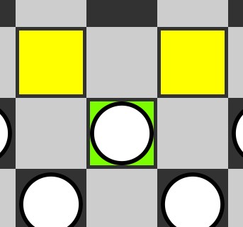
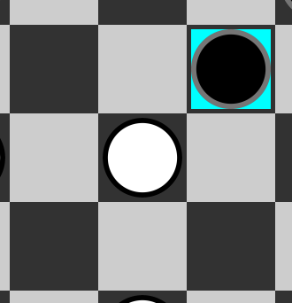
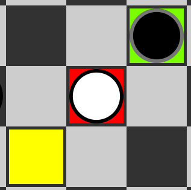
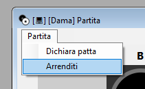
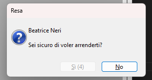
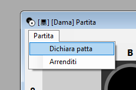

Cliccare sulla pedina che si vuole muovere. La pedina selezionata avrà lo sfondo verde e le mosse
disponibili verranno visualizzate con uno sfondo giallo.

Le pedine che saranno obbligate a mangiare un'altra pedina saranno evidenziate con uno sfondo di colore
azzurro.

Quindi, le pedine che verranno mangiate saranno evidenziate invece da uno sfondo rosso.

Se una pedina è selezionata, cliccando sulla stessa, su una cella dove una mossa non è legale o su una pedina avversaria, quest'ultima verrà deselezionata.
Per arrendersi, aprire il menù (cliccando su "Partita") e selezionare "Arrenditi".

Un prompt per confermare l'arresa comparirà.
Se si clicca su "Sì" allora si concluderà la resa, facendo vincere l'avversario.

Per dichiarare una partita patta, aprire il menù (cliccando su "Partita") e selezionare "Dichiara patta".

Un prompt per confermare la situazione di parità comparirà.
Selezionando "Sì", successivamente si aprirà un'altro prompt di ulteriore conferma che dovrà essere
confermato dall'avversario.
Se anche l'avversario selezionerà "Sì", la partita risulterà patta.
Si gioca a turni alterni facendo cominciare la partita al bianco.
Il giocatore attuale sceglie una pedina la muove in avanti ed in diagonale, ovvero, la sposta in una delle celle diagonali libere e adiacenti.
Nel caso in cui la cella selezionata sia occupata da una propria pedina, la mossa sarà considerata invalida.
Tuttavia, se la cella scelta è occupata da una pedina avversaria e la cella adiacente successiva è libera, il giocatore avrà il diritto di procedere con la mossa, eseguendo uno scenario di 'cattura'.
Durante tale procedura, la propria pedina sarà spostata oltre la pedina avversaria adiacente, conseguendo così la rimozione di quest'ultima dal tabellone di gioco.
Se durante il proprio turno un giocatore ha la possibilità di catturare una pedina avversaria, è obbligato a eseguire la presa.
In altre parole, se una pedina è in grado di muoversi per catturare una pedina avversaria, il giocatore deve eseguire la mossa di cattura.
Questa regola è vincolante e non può essere ignorata.
Tuttavia, se ci sono più opzioni di cattura disponibili, il giocatore può scegliere quale presa eseguire.
Se, dopo aver completato una mossa di cattura, la pedina del giocatore ha la possibilità immediata di catturare un'altra pedina avversaria, allora il giocatore è obbligato a continuare la sequenza di prese.
In altre parole, se una pedina ha la possibilità di eseguire una serie di catture consecutive, il giocatore deve procedere con tali mosse fino a quando non esiste più la possibilità di effettuare ulteriori catture.
Questa regola è vincolante e deve essere rispettata durante il turno del giocatore che sta eseguendo le prese.
Quando una pedina raggiunge l'ultima fila del campo avversario, viene promossa a "dama".
La dama ha la possibilità di muoversi sia in avanti che all'indietro lungo le diagonali.
Tuttavia, una dama non può continuare una serie di prese dopo essere stata promossa.
Inoltre, una dama non può essere catturata da una pedina avversaria, a meno che quest'ultima non sia anch'essa una dama.